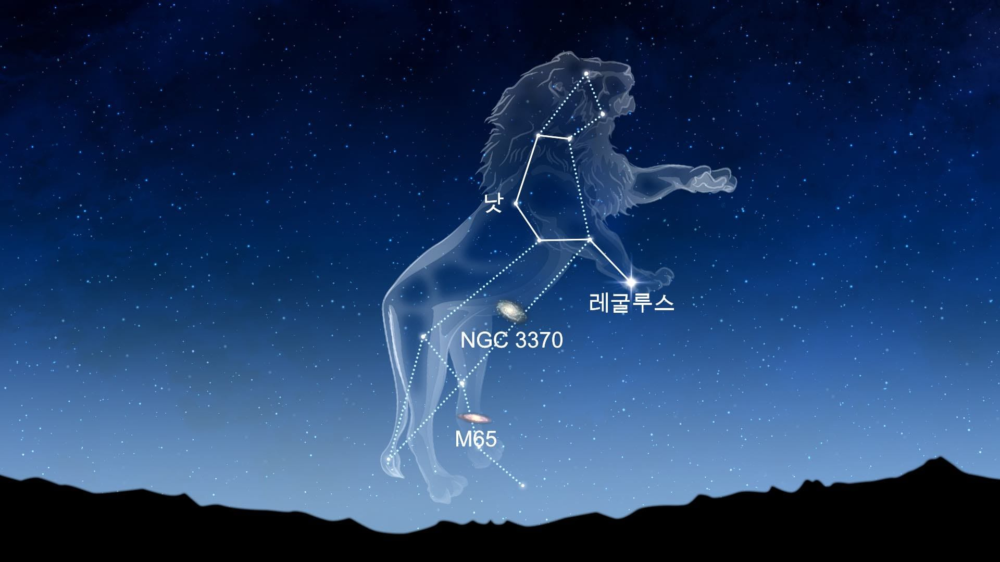
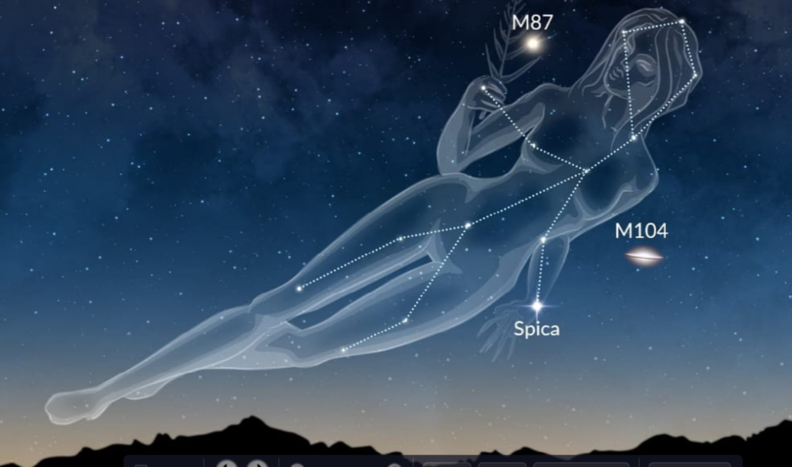
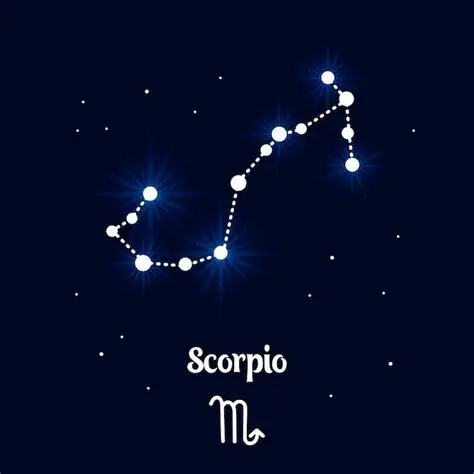
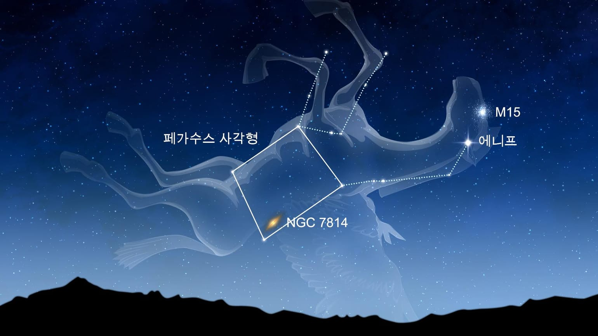
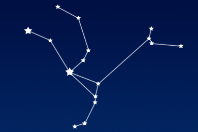
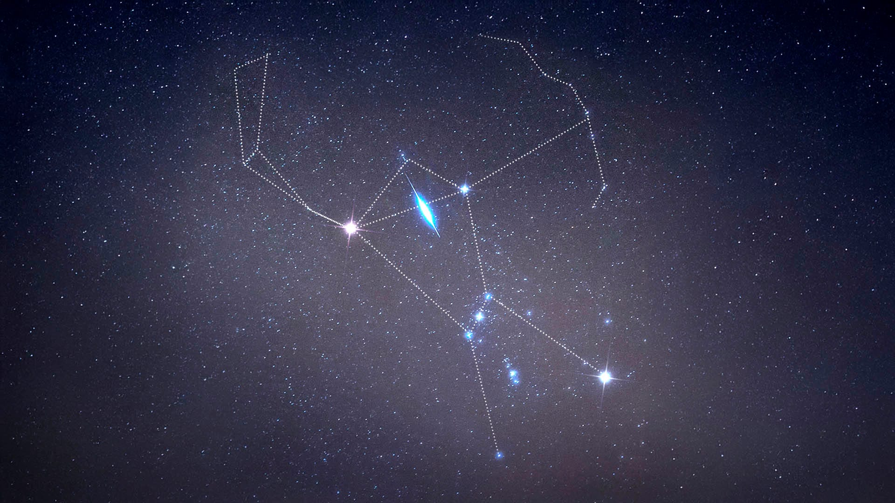
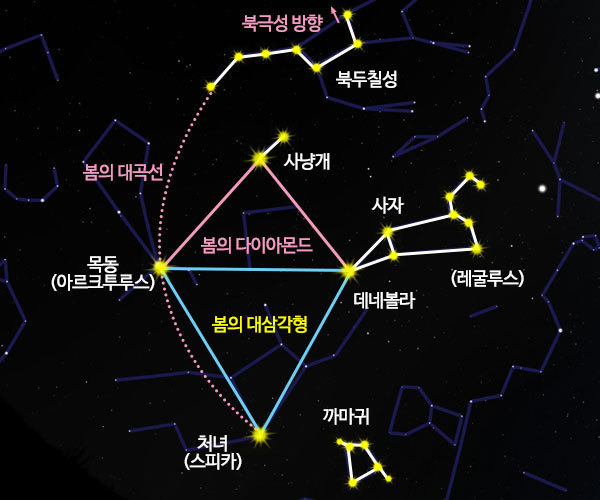
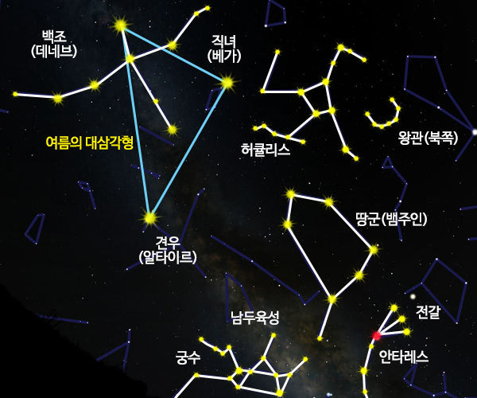
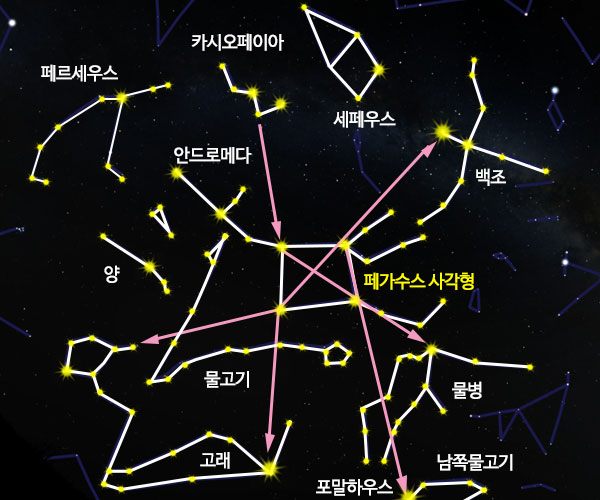
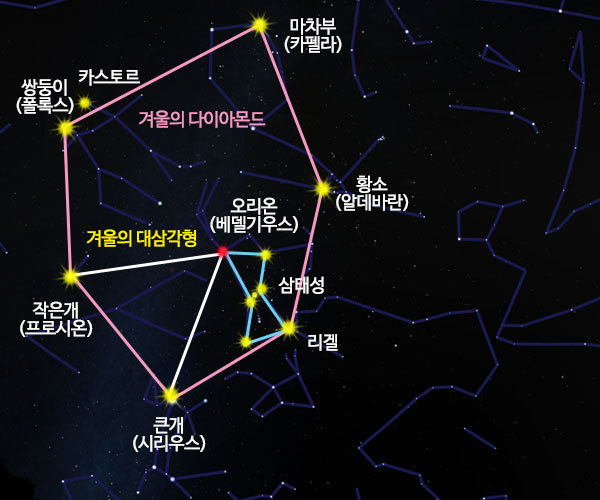

별빛기행 · 홈으로 돌아가기
밤하늘의 별들을 무리 지어 연결하고 이름을 붙인 별자리는 고대인들의 상상력과 탐험의 역사에서 시작되었습니다. 현재 국제천문연맹(IAU)이 공인한 전 하늘의 공식 별자리는 총 88개입니다.
지구의 공전 운동 때문에 밤하늘에 보이는 별자리들은 계절에 따라 조금씩 변화하며, 각 계절을 대표하는 아름다운 길잡이 별들이 존재합니다.

봄을 알리는 황도 12궁 중 하나로, 뒤집어 놓은 물음표(?) 모양의 사자 머리가 눈에 띕니다. 1등성 '레굴루스'가 유명합니다.

하늘에서 두 번째로 면적이 넓은 별자리입니다. 순백색의 1등성 '스피카'를 가지고 있으며, 정의의 여신 아스트라이아의 신화가 전해집니다.
은하수 서쪽 기슭에서 빛나는 '베가(직녀성)'를 포함합니다. 오르페우스가 연주하던 거문고 모양을 형상화한 작고 아름다운 별자리입니다.

여름 남쪽 하늘을 대표하는 별자리로, 붉은 초거성 '안타레스'가 전갈의 심장 자리에서 빛납니다. S자 모양의 꼬리가 뚜렷하게 이어집니다.

가을 하늘의 길잡이 별자리입니다. 네 개의 별이 이루는 커다란 사각형 '페가수스의 대사각형'은 가을 밤하늘의 기준점이 됩니다.

맨눈으로 볼 수 있는 가장 먼 천체인 '안드로메다 은하(M31)'를 품고 있습니다. 지구에서 약 250만 광년 거리에 위치한 우리 은하의 이웃 은하입니다.

전 하늘에서 가장 화려한 별자리 중 하나입니다. 붉은 '베텔게우스'와 푸른 '리겔', 세 별이 나란한 오리온의 허리띠가 인상적입니다.
황도 12궁 중 하나로, 쌍둥이 형제를 상징하는 두 밝은 별 '카스토르'와 '폴룩스'가 나란히 빛납니다. 12월 쌍둥이자리 유성우로도 유명합니다.

사자자리 · 처녀자리 · 목동자리

거문고자리 · 전갈자리 · 궁수자리

페가수스자리 · 안드로메다자리 · 카시오페이아자리

오리온자리 · 쌍둥이자리 · 황소자리